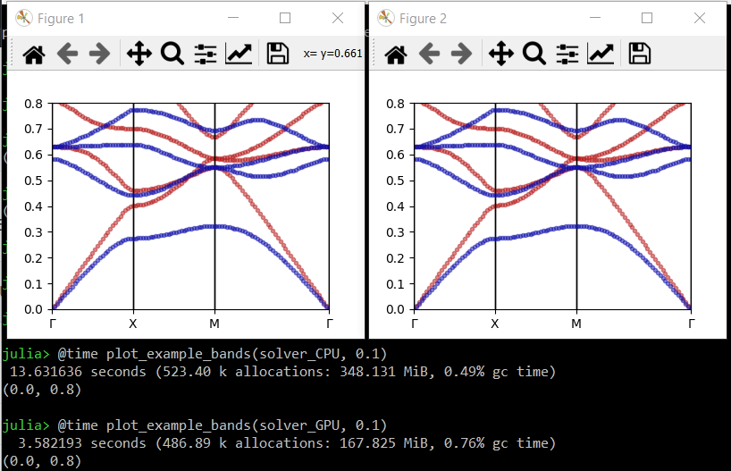

How to accelerate calculations using CUDA-compatible GPUs
You will need Peacock v0.1.2 or later for this feature.
Summary
Pass GPU=true when creating your Solver.
solver = Solver(geometry, fourier_space_cutoff, GPU=true)Full example
By default, Peacock.jl uses the CPU. However, you may be able to accelerate your calculations if you have a CUDA-compatible GPU.
Let's begin by defining a simple photonic crystal.
using Peacock, PyPlot
function epf(x,y)
# equation of a circle with radius 0.2a
if x^2+y^2 <= 0.2^2
# dielectric inside the circle
return 8.9
else
# air outside the circle
return 1
end
end
# Permeability is unity everywhere
function muf(x,y)
return 1
end
a1 = [1, 0] # first lattice vector
a2 = [0, 1] # second lattice vector
d1 = 0.01 # resolution along first lattice vector
d2 = 0.01 # resolution along second lattice vector
geometry = Geometry(epf, muf, a1, a2, d1, d2)When we construct the Solver from the Geometry, we can pass the GPU flag. By default, GPU=false.
fourier_space_cutoff = 9 # larger = more accurate, slower
solver_CPU = Solver(geometry, fourier_space_cutoff)
solver_GPU = Solver(geometry, fourier_space_cutoff, GPU=true)The fields of the solver_CPU are standard Julia arrays, but the fields of the solver_GPU are CUDA arrays which will utilise the GPU.
typeof(solver_CPU.epc) == Array{Complex{Float64},2}
typeof(solver_GPU.epc) == CUDA.CuArray{Complex{Float64},2}Now, let's compare the time to solve and plot some bands with and without the GPU.
function plot_example_bands(solver, dk)
G = BrillouinZoneCoordinate( 0, 0, "Γ")
X = BrillouinZoneCoordinate(1/2, 0, "X")
M = BrillouinZoneCoordinate(1/2, 1/2, "M")
ks = [G,X,M,G]
figure(figsize=(4,3))
plot_band_diagram(solver, ks, TE, color="red",
bands=1:4, dk=dk, frequency_scale=1/2pi)
plot_band_diagram(solver, ks, TM, color="blue",
bands=1:4, dk=dk, frequency_scale=1/2pi)
ylim(0,0.8)
end
# call once to make sure functions are compiled
plot_example_bands(solver_CPU, 2)
plot_example_bands(solver_GPU, 2)
# time CPU vs GPU
close("all")
@time plot_example_bands(solver_CPU, 0.1)
@time plot_example_bands(solver_GPU, 0.1)
show()We find a significant speed up using the GPU - ~13.6 seconds vs ~3.6 seconds. 
Further reading
- CUDA.jl: CUDA programming in Julia